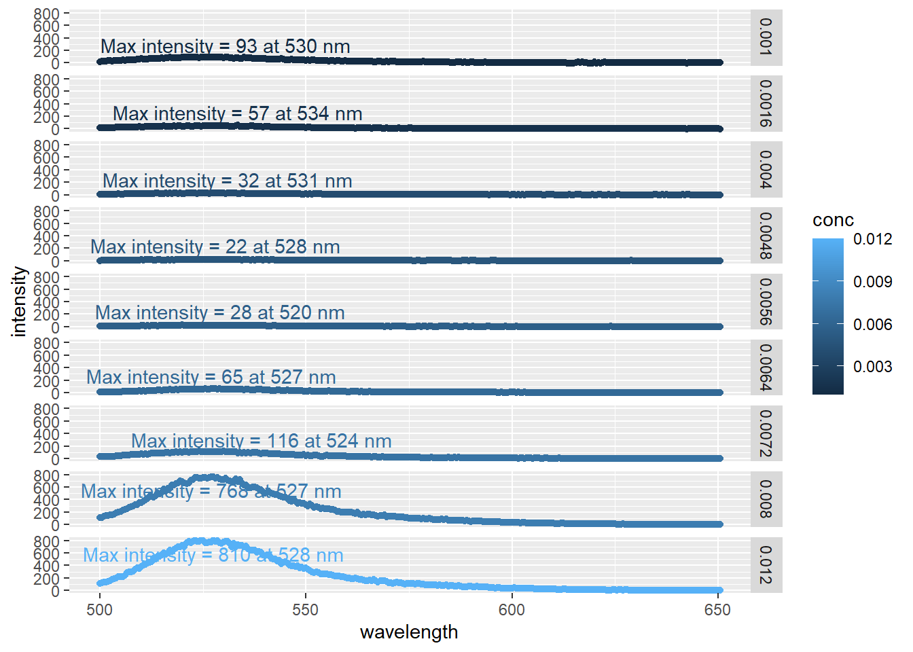
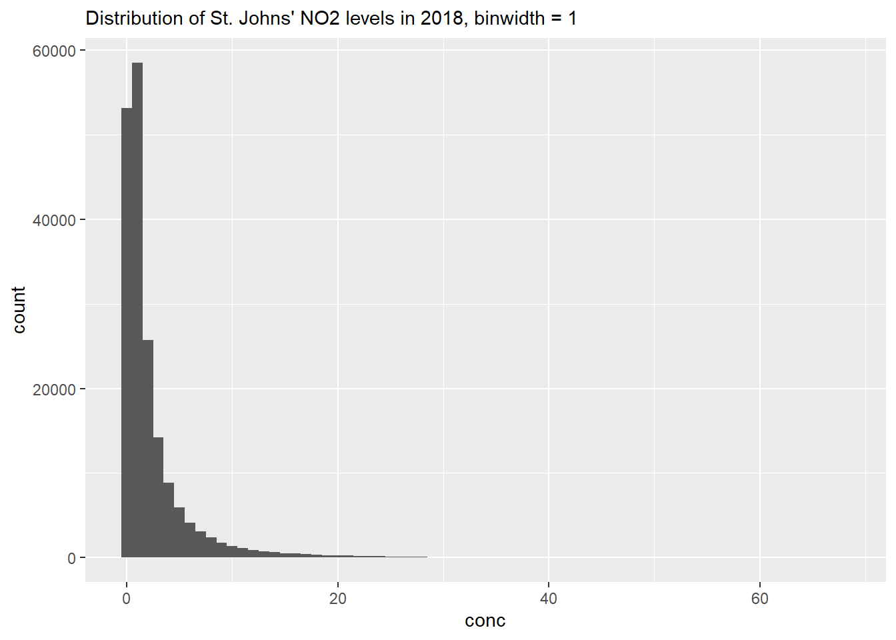

Chapter 18 Non-linear Logistic Regression Modelling
Note this is from the proof-of-concept book and will be shortened/narrowed down to talk about non-l;inear regression in general while using a logistic regreassion as an example. Will be reworked shortly, just posting so people get an idea. - DH
For this tutorial we’ll be using data obtained from an experiment in CHM317. In this experiment, students measure the fluorescence of the fluorescent dye acridine orange in the presence of sodium dodecyl sulfate (SDS). In, or near, the critical micellular region of SDS, there is a sharp change in absorbance and fluorescence of the solution. Tracking these changes in fluorescence, students are to estimate the CMC of SDS.
The setting of the fluorometer for this experiment are:
| Instrumental Settings | |
|---|---|
| Instrument Name | LS50-B |
| Excitation Wavelength | 480 nm |
| Emission Wavelength Range | 500 to 650.5 nm |
| Excitation Slit Width | 2.5 nm |
| Emission Slit Width | 3 nm |
| Scan Speed | 250 nm/min |
Let’s go ahead and import our data:
library(tidyverse)
sdsWide <- read_csv("data/CHM317/fluoro_SDSCMC.csv")
head(sdsWide)## # A tibble: 6 x 10
## `Wavelength (nm)` `0.001 M SDS` `0.0016 M SDS` `0.004 M SDS` `0.0048 M SDS`
## <dbl> <dbl> <dbl> <dbl> <dbl>
## 1 500 20.0 18.6 7.02 1.12
## 2 500. 27.3 13.9 5.45 5.46
## 3 501 27.0 12.5 8.13 5.89
## 4 502. 29.7 12.5 8.17 5.81
## 5 502 32.6 15.7 4.58 6.69
## 6 502. 32.8 19.4 5.94 5.33
## # ... with 5 more variables: 0.0056 M SDS <dbl>, 0.0064 M SDS <dbl>,
## # 0.0072 M SDS <dbl>, 0.008 M SDS <dbl>, 0.012 M SDS <dbl>Looking at our data headers we can see the familiar ‘wide’ format, with a wavelength column corresponding to the emission wavelength and the remainder accounting for the emission intensity at various concentration of SDS. Note that the intensity columns contains two pieces of information: 1) the concentration in moles per liter and 2) the identity of the chemical, SDS in this case. So when we tidy our data we’ll need to split these column headers up so we get a column corresponding to the numerical value of the concentration, and another with the identity of the column.
sds <- sdsWide %>%
pivot_longer(cols = !`Wavelength (nm)`, # select all columns BESIDES `Wavelength (nm)`
names_to = c("conc", "conc.units", "chemical"),
names_pattern = "(.*) (.) (.*)",
values_to = "intensity",
names_transform = list(conc = as.numeric)
) %>%
rename(wavelength = 'Wavelength (nm)') # renaming column, less typing later on.
head(sds)## # A tibble: 6 x 5
## wavelength conc conc.units chemical intensity
## <dbl> <dbl> <chr> <chr> <dbl>
## 1 500 0.001 M SDS 20.0
## 2 500 0.0016 M SDS 18.6
## 3 500 0.004 M SDS 7.02
## 4 500 0.0048 M SDS 1.12
## 5 500 0.0056 M SDS 5.48
## 6 500 0.0064 M SDS 7.72The key bit of code here is names_to and names_pattern. The first part creates three new columns, and the second part searches and subsequently breaks up those headers. Recall our original headers looked like this: 0.001 M SDS, where we had the concentration, a space (which is a character!), the concentration units, another space, and finally the chemical. What names_pattern = "(.*) (.) (.*).is searching for three chunks of characters separated by a space. We specify the chunk of characters in the parentheses. So the first bit, (.*), means look for any character (. in this context is a placeholder for any character) and the chunk of characters can be any length (as denoted by *). So extending this, we see our code looks for three chunks of characters, delimited by a space between them. The first can be any length, the second is 1 character long, and the third can be any length. You could have specified to look for M or SDS explicitly, but if we had different chemicals or units in our dataset these would be lost.
Lastly note names_transform. We split up our original headers to populate rows. However our original headers were stored as characters, and when w split them up we created three separate strings of characters, so R will treat out conc values as characters rather than numbers. By using names_transform we tell R to treat conc values as numbers.
Oh and we renamed our original Wavelength (nm) column to wavelength using the rename function. It’s always a good idea to use the simplest column names you can (and no simpler!). A good practice is to remove any spaces (you can use snake_case or camelCase instead) as well as removing special character such as parentheses.
18.1 Visually inspecting our data
Let’s make a quick plot of our fluorescence intensity data and see what we have.
ggplot(data = sds,
aes(x = wavelength,
y = intensity,
colour = conc)) +
geom_point() 
Alright, alright, alright. Things are looking like we’d expect with some well behaved data. By plotting each point individually, we can really see the noise inherent with each reading. For a more robust analysis we’d typically conduct several replicates and average out the spectra for each concentration or apply some kind of model to smooth each peak. But today, we’re just interested in getting the maximal fluorescence emission intensity from each reading.
Let’s first annotate our plate to find the highest point, then go about extracting our data for analysis.
18.1.1 Annotating maximal values
Annotating the maximal point on the plot will take a bit more code then actually obtaining it from the data. For this we’ll need to use the ggpmisc package which contains miscellaneous extensions for ggplot2, and ggrepel so our labels won’t overlap.
library(ggpmisc)
library(ggrepel)
ggplot(data = sds,
aes(x = wavelength,
y = intensity,
colour = conc)) +
geom_point() +
ggpmisc::stat_peaks(span = NULL,
geom = "text_repel", # From ggrepel
mapping = aes(label = paste(..y.label.., ..x.label..)),
x.label.fmt = "at %.0f nm",
y.label.fmt = "Max intensity = %.0f",
segment.colour = "black",
arrow = grid::arrow(length = unit(0.1, "inches")),
nudge_x = 60,
nudge_y = 200) +
facet_grid(rows = vars(conc))
By facetting the plot (i.e. arranging many smaller plots vs. one large one), we can easily see the increase in emission peak intensity as the concentration of SDS increases. Likewise, we can avoid the messy overlap of the max intensity annotations.
This is only one way to plot this data, but this is sufficient because we’re simply inspecting our data at this point. And here we can see that the intensity all occur around a similar wavelength (~ 528 nm)
18.2 Extracting maximal values
The plots we made above are great for inspecting our data, but what we really want is the maximal emission intensity value to calculate the CMC of SDS. We can see the maximal values on the plots, but there’s no way we’re typing those in manually. So let’s go ahead and get out maximal values from our dataset:
sdsMax <- sds %>%
group_by(chemical, conc.units, conc) %>%
filter(intensity == max(intensity)) %>%
ungroup()
head(sdsMax)## # A tibble: 6 x 5
## wavelength conc conc.units chemical intensity
## <dbl> <dbl> <chr> <chr> <dbl>
## 1 520 0.0056 M SDS 28.1
## 2 524 0.0072 M SDS 116.
## 3 527 0.0064 M SDS 65.3
## 4 527 0.008 M SDS 768.
## 5 528. 0.012 M SDS 810.
## 6 528 0.0048 M SDS 22.0All we did was tell R to take the row with the highest emission intensity value per group. We specified chemical, conc.units, and conc, in case we had more chemicals in our dataset.
Are maximum values match those we see in our plot above. Let’s see how they stack up againt each other:
ggplot(data = sdsMax,
aes(x = conc,
y = intensity)) +
geom_point() 
Figure 18.1: Plot of maximal fluoresence intensity at various concentrations of SDS.
18.3 Modelling Sigmoidal Curve
So we want to find the critical micellular concentration of SDS using the maximum fluorescence emission. The CMC is at the ‘midpoint of the sigmoidal curve.’ Which means we’ll need to a) plot a sigmoidal curve and b) extract the midpoint.
The ‘sigmoidal’ or ‘S-shaped’ curve mentioned in the lab manual is known as a logistic regression. Logistic regressions are often used to model systems with a largely binary outcome. In other words, the system starts at point A, and remains there for awhile, before ‘quickly’ jumping up (or down) to level B and remain there for the remainder. Examples include saturation and dose response curves.
For our CMC working data, the fluorescence intensity is low when the \([SDS] < CMC\), as micelles are not able to form. However once \([SDS] > CMC\), micelles form and the fluorescence intensity increases. We can see this trend in 18.1.
There are different forms of logistic regression equations. The simplest form is the 1 parameter, or sigmoid, function which looks like \(f(x) = \frac{1}{1+e^{-x}}\). The outputs for this function are between 0 and 1. We could apply this formula to our model if we somehow normalized our fluoresence intensity accordingly. An alternative is to use the four parameter logistic regression, which looks like:
\[f(x) = \frac{a - d}{\left[ 1 + \left( \frac{x}{c} \right)^b \right ]} + d\]
where:
- a = the theoretical response when \(x = 0\)
- b = the slope factor
- c = the mid-range concentration (inflection point)
- This is commonly referred to as the EC50 or LC50 in toxicology/pharmacology.
- d = the theoretical response when \(x = \infty\)
Why do we need such a complicated formula for our model? Well, looking again at 18.1 we see that the lower point is approximately 20, and not zero. Likewise, the upper limit appears to be around 825. The slope factor is necessary because the transition from the low to high steady state occurs over a small, but not immeasurable, concentration range. And lastly, by including the inflection point, we can calculate exactly for this value using R to get the CMC estimate.
18.3.1 Calculating Logistic Regression
A strength of R is it’s flexibility in running various models, and logistic regression is no different. We can use a number of packages to reach these ends, specifically the drc package contains a plethora of functions for modelling dose response curves (hence drc). However, for this example well use a more generalized approach. Earlier we talked about linear regression, where we plot adjust the slope and intercept of a linear equation to best fit our data (see Calibration Curves). Recall that this optimization is based on minimizing the distance between the model and all of the experimental points (least squares). Well the stats package has a function called nls that expands upon the this to nonlinear models. Per the nls function description: “[nls] determine[s] the nonlinear (weighted) least_squared estimates of the parameters of a nonlinear model.”
So we can create a formula in R based on the four-parameter logistic regression described above. After that, we’ll need to produce some starting details from which the model can build off of. If we don’t tell nls where to start, it can’t function, as the search space is too large. Looking at @ref{fig:sdsMaxPlot}, the intensity appears to floor around 20; the intensity appears to max out around 820; the midpoint appears to be around 0.0075 M, and let’s say the slope is 1. Remember, these are starting values from which nls starts to optimize from, and not the actual values used to construct the model.
So, let’s create our model
logisModel <- nls(intensity ~ (a-d)/(1 + (conc /c)^b) + d,
data = sdsMax,
start = list(a = 20, # min intensity
b = 1, # slope
c = 0.0075, # CMC
d= 820) # max intensity
)## Error in numericDeriv(form[[3L]], names(ind), env, central = nDcentral): Missing value or an infinity produced when evaluating the model… and we get an error message. Get used to these when modelling! Don’t worry about understanding it completely, error messages are often written with programmers in mind so they can be a bit cryptic. You can often copy and paste these directly into any search engine to get some more information, but this one is simple enough: we either have a missing value or an infinity produced. Well we have six input parameters in our model: a, b, c, d, our independent variable conc, and our dependant variable intensity. We’ve also supplied starting values to all of them via the list we created inside the function. Therefore, one of our starting values must be too far off from a plausible start point and is causing troubles in the nls function. They all look good except for the slope start value b = 1.
The slope here is an approximation for the slope between the min value a and max value d. Looking at our data in @ref{fig:sdsMaxPlot}, that slope may be a bit shallow consider the large jump in intensity. Let’s increase the value of b and try again:
logisModel <- nls(intensity ~ (a-d)/(1 + (conc /c)^b) + d,
data = sdsMax,
start = list(a = 20, # min intensity
b = 10, # new slope
c = 0.0075, # CMC
d= 820) # max intensity
)Ey, no errors! Once you progress beyond simple linear regressions, modelling becomes more of a craft. If we were trying to apply this model to multiple datasets, we would probably want to shop around cran to find a package with self-starting models. This way we can circument having to supply starting parameters. Anyways, that’s for another day.
For now, let’s take a look at our model outputs which are all stored in the logisModel variable. To this end, we’ll use the broom package which cleans up the default model outputs in R. Specifically, we’ll use tidy to get an output of our estimated model parameters (i.e. a,b,c, and d), and augment for a data frame of containing the input values, and the estimated intensity values.
Let’s look at our fitted values:
library(broom)
augment <- augment(logisModel)
augment## # A tibble: 9 x 4
## intensity conc .fitted .resid
## <dbl> <dbl> <dbl> <dbl>
## 1 28.1 0.0056 49.4 -21.3
## 2 116. 0.0072 116. -0.123
## 3 65.3 0.0064 49.7 15.6
## 4 768. 0.008 768. 0.0977
## 5 810. 0.012 810. -0.0861
## 6 22.0 0.0048 49.4 -27.5
## 7 93.0 0.001 49.4 43.5
## 8 31.7 0.004 49.4 -17.7
## 9 57.0 0.0016 49.4 7.51What we can see here from augment are the intensity and conc values we inputted into R. .fitted are the intenisty values for a given concentration fitted to out model, and .resid is the residuals, the difference between the actual and estimated values.
Let’s go ahead and plot our actual and fitted values against each other.
ggplot(augment, aes(x = conc, y = intensity, colour = "actual")) +
geom_point() +
geom_line(aes(y = .fitted)) +
geom_point(aes(y = .fitted, colour = "fitted")) 
Looks pretty good, although it’s interesting how the baseline at lower concentrations doesn’t plateau like the model values. You’ll note that the line produced by geom_line will only draw a straight line between points. There’s ways to address this, but we don’t need to for our needs right now.
Looking again at our model results, there doesn’t appear to be any gross outliers, so our model seems to have done a good job. We can verify this by checking the residuals:
ggplot(augment, aes(x = conc, y = .resid)) +
geom_point() 
We can’t see any obvious patterns in the residuals (i.e. all are negative), so we can have further confidence in the fit of out model.
18.3.2 Extracting model parameters
To extrac the model parameters a, b, c, and d we can use the tidy function:
library(broom)
tidy <- tidy(logisModel)
tidy## # A tibble: 4 x 5
## term estimate std.error statistic p.value
## <chr> <dbl> <dbl> <dbl> <dbl>
## 1 a 49.4 11.1 4.44 0.00678
## 2 b 49.0 9.65 5.07 0.00385
## 3 c 0.00755 0.0000785 96.2 0.00000000230
## 4 d 810. 27.3 29.7 0.000000808Looking past the scientific notation, our model values are pretty similar to what we estimated. Specifically, c, our midpoint value is 0.0076 M. Not too bad from our original estimate. And recall that the midpoint of our curve corresponds to the critical micellular concentration of SDS, which we’ve estimated to be 0.0076M. Not too far from the literature value of 0.0081 M.